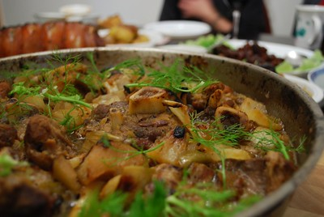

Pork Osso Bucco

Description
A variation on the Osso Bucco traditional recipe in which pork replaces turkey
This variation uses fennels and apples that makes the recipe convenient for sweet palates
ingredients
- 6 thick-cut pork shank sections, 2 to 3 inches thick
- black pepper to taste
- 1 teaspoon table salt
- 1 tablespoon olive oil
- 1 tablespoon butter
- 1 large yellow onion, sliced
- 2 medium-sized fennels
- 1 large carrot, diced
- 3 to 4 four medium medium-sized apples
- 2 tablespoons all-purpose flour
Steps
- Season pork shanks with salt and pepper.
- Heat olive oil and butter in a pot over medium heat.
Sear the pork shanks one by one, two minutes on each side.Then done, set aside.
- Cook and stir onion,carrot, fennel and salt in the same pot at medium heat
- Add the flour ans stir to dissolve it.
- Add wine and simmer until sauce reduces slightly.
- Add the diced apples.
- Return the pork shanks to the pot.
- Cover and cook at low heat for three to three and an half hours.
- Serve with plenty of sauce and enjoy!